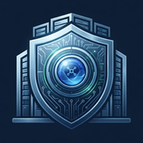
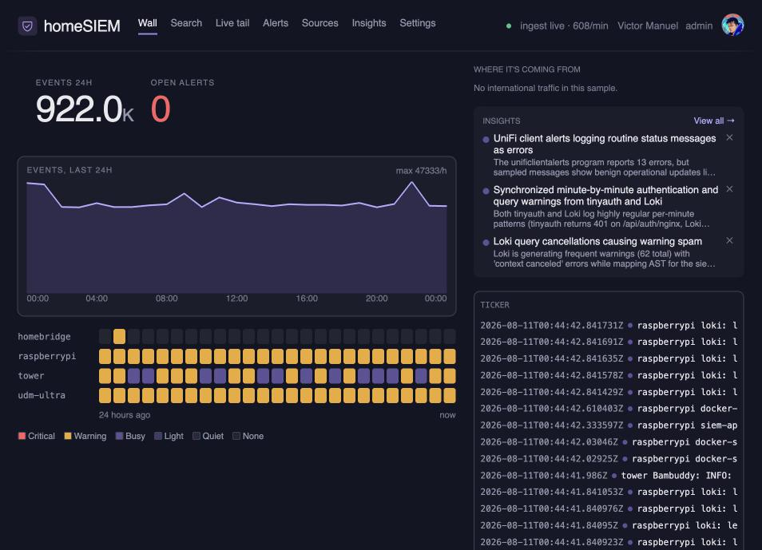
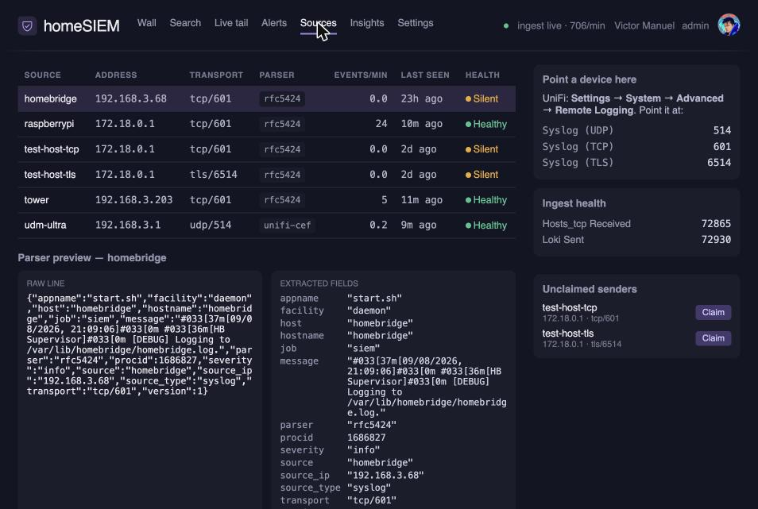
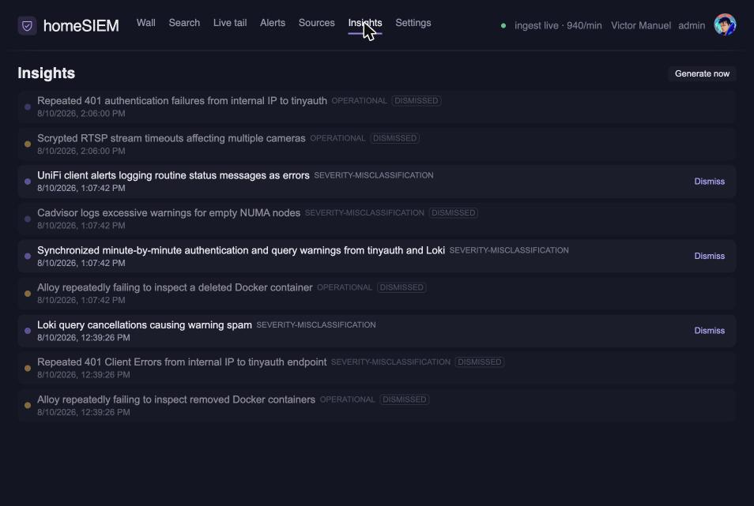
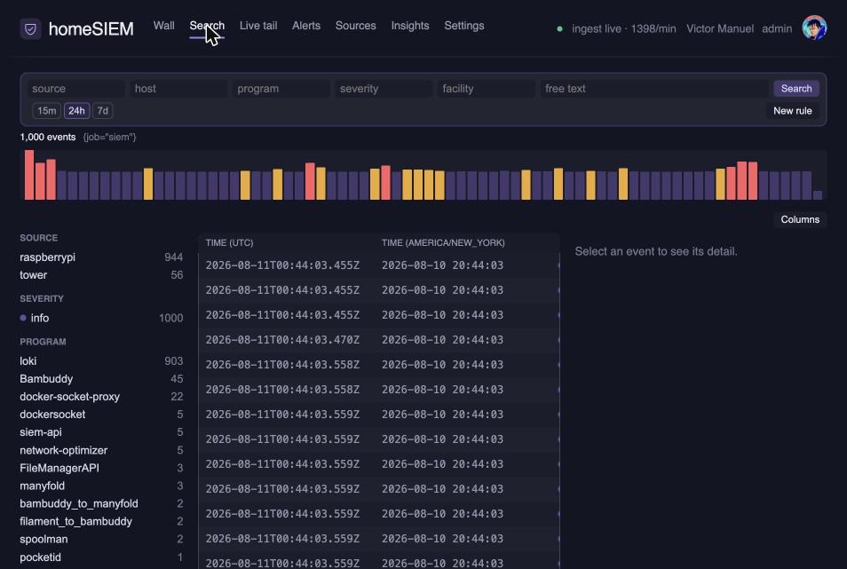

homeSIEMSecurity triage for your homelab.
Not another metrics dashboard.
homeSIEM receives syslog from your network gear and servers, parses and enriches it, stores it in Loki, evaluates correlation rules, and raises alerts you triage in a browser console authenticated over OIDC. Self-hosted, open source.
SSH brute force against raspberrypi
- Source IP
- 203.0.113.47
- Enriched
- NL · AS64511 · threat-intel: listed
- Attempts
- 5 in 2.1s
Simulated demo of a real rule shape. Your syslog, your rules, your hardware.
The Wall: your whole network at a glance
Event volume, a source-by-hour severity grid, live insights, and a ticker tailing every source.

Three services, one console
Each piece does one job and hands off to the next.
siem-ingest
Vector, configured: syslog sources for UniFi and generic hosts, parsing, geo/threat-intel enrichment, a fast path to the API, and the full stream to Loki.

siem-api
Rule scheduler (threshold / first-seen / absence rule shapes), alert lifecycle, Loki client, OIDC verification + RBAC, and rich ntfy delivery.

siem-web
Wall, Search, Live tail, Alerts, Sources, and Settings — a SvelteKit console with a thin BFF holding the session cookie.

How events flow
Syslog in, alerts out.
Quickstart
The root docker-compose.yml bundles Loki and ntfy too, so this gives you a working stack with no pre-existing homelab infrastructure required.
# clone and configure
git clone https://github.com/hibikipr/homeSIEM.git
cd homeSIEM
cp .env.example .env
# bring up Loki, ntfy, siem-api, siem-web
docker compose up -d --buildYou'll still need to register an OIDC client and seed an initial admin role mapping before your first login — see the full README for the walkthrough, and turning on live ingest is a separate opt-in step.